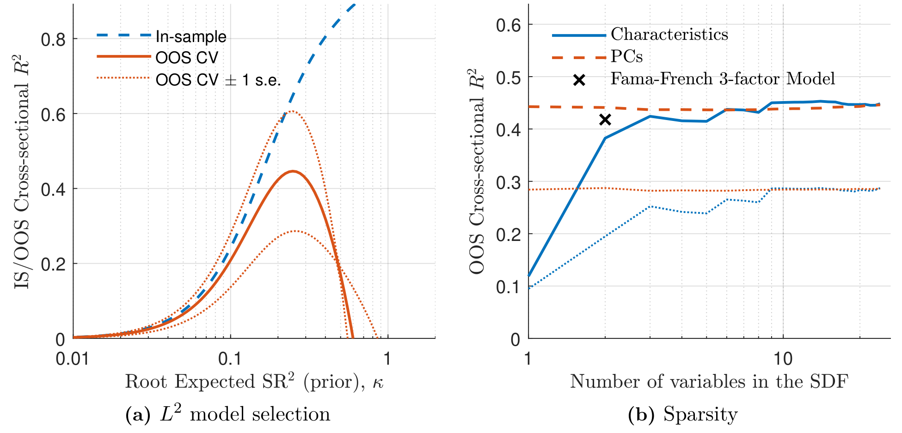
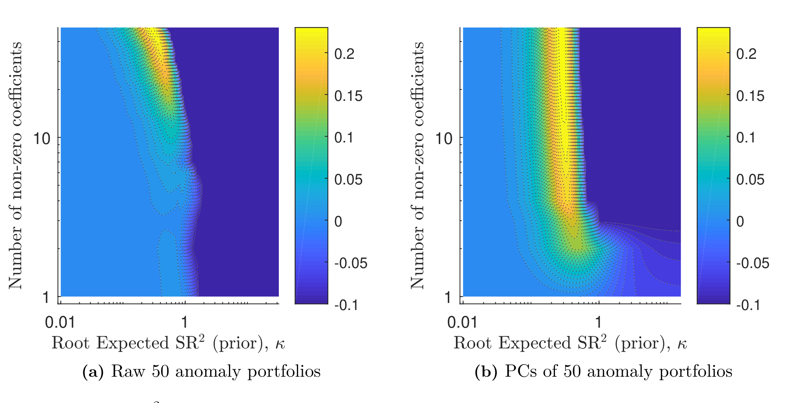
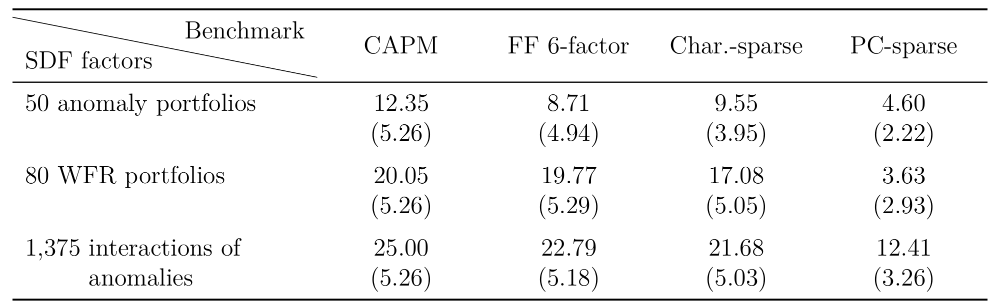
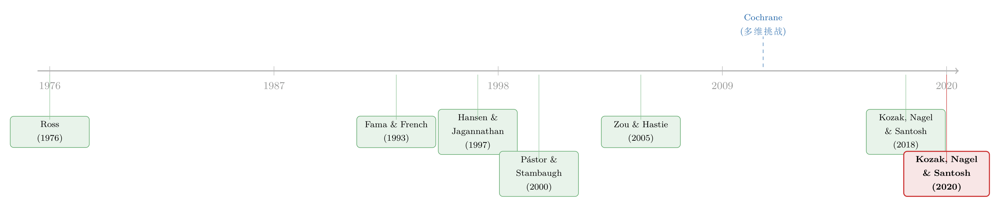

压缩横截面：因子动物园的尽头，不是更少的因子，而是更聪明的收缩
本文精读 Kozak, Nagel & Santosh (2020, Journal of Financial Economics) —— Shrinking the Cross-Section。这篇论文想回答一个困扰了实证资产定价整整三十年的问题：几十上百个「异象」(anomalies) 背后，到底能不能用三五个特征因子（characteristics-based factors）讲清楚？作者的答案是冷静而决绝的：不能。但他们随即给出了一个出人意料的转折——在原始特征空间里几乎不存在的「稀疏性」(sparsity)，一旦把数据旋转到主成分（principal components, PCs）的坐标系下，就豁然出现了。真正稀缺的，从来不是因子，而是「把均值和协方差绑在一起」的那一点经济学纪律。
1 引言：一座越盖越高的塔
对实证资产定价稍有了解的人，大概都听说过那座叫做「因子动物园」(factor zoo) 的塔。它的地基是 Fama 与 French (1993) 的三因子模型；然后 Hou et al. (2015) 添到了四因子，Fama 与 French (2015) 加到五因子，Barillas 与 Shanken (2017) 又主张六因子。每当文献里冒出一个新的横截面预测变量，这座塔就要往上垒一层。塔越盖越高，可塔顶始终够不着天——总有下一个异象在等着。
这背后其实藏着一个从未被正面回答的问题。研究者们之所以执着于「少数几个特征因子」，是因为他们相信存在一个特征稀疏的随机贴现因子 (stochastic discount factor, SDF)：只要找对了三五个特征，就能把几十个异象的定价信息全部吸收掉。换句话说，他们假定这几十个异象之间存在着极度的冗余 (redundancy)。
但这个信念从来没有在「一大把异象同时上场」的环境里被严格检验过。原因很简单——它在统计上极难处理。Cochrane (2011) 在其著名的主席演讲里把这件事称作「多维挑战」(the multidimensional challenge)（关于这篇演讲的全景，可参见我此前写的《贴现率：资产定价的中心议题》）。这篇论文，正是要从正面把这个挑战啃下来。
全文我会反复围绕一个核心来讲：要在高维世界里得到一个稳健的 SDF，你需要的不是「把因子砍到只剩几个」（稀疏），而是「按经济学的道理去收缩系数」（收缩）。稀疏是结果，收缩才是手段；而且收缩要收得不均匀——对低方差的方向往死里收，对高方差的方向手下留情。
2 先把舞台搭好：特征因子下的 SDF
我们先不谈估计，只谈总体矩 (population moments)。任何线性 SDF 都可以写在超额收益的张成空间里。沿着 Hansen 与 Jagannathan (1991) 的思路，对一个 \(N\times 1\) 的超额收益向量 \(R_t\)，SDF 取如下形式：
$$ M_t = 1 - b_{t-1}'\,(R_t - \mathbb{E} R_t), $$
它需要满足条件定价方程 \(\mathbb{E}_{t-1}[M_t R_t] = 0\)。
特征因子模型 (characteristics-based factor models) 的关键一步，是把 SDF 的载荷 \(b_{t-1}\) 参数化为特征的线性函数：
$$ b_{t-1} = Z_{t-1}\,b, $$
这里 \(Z_{t-1}\) 是 \(N\times H\) 的资产特征矩阵，\(b\) 是 \(H\times 1\) 的、不随时间变化的系数。Fama 与 French (1993) 用的 \(H\) 只有两个：市值和账面市值比。而本文的雄心是让 \(H\) 大到几十、上百。
把上式代回去，SDF 就落在了 \(H\) 个特征因子收益 \(F_t = Z_{t-1}'R_t\) 的张成空间里：
$$ M_t = 1 - b'\,(F_t - \mathbb{E} F_t), \qquad \mathbb{E}[M_t F_t] = 0. $$
注意这里有个巧妙的设定：这些因子 \(F_t\) 既是我们想解释的资产，又是可能进入 SDF 的候选定价因子。作者把每一列特征做了横截面去均值，于是 \(F_t\) 都是零投资的多空组合收益。在已知总体矩的理想世界里，求解上面两式得到的系数干净利落：
$$ b = \Sigma^{-1}\,\mathbb{E}(F_t), \qquad \Sigma \equiv \mathbb{E}\!\left[(F_t-\mathbb{E}F_t)(F_t-\mathbb{E}F_t)'\right]. $$
再把它改写成一个更有解释力的形式：
$$ b = (\Sigma\Sigma)^{-1}\,\Sigma\,\mathbb{E}(F_t). $$
这一行告诉我们：SDF 系数其实就是用平均收益对「各因子与所有因子的协方差」做横截面回归的系数。这正是 SDF 系数同时也是均值方差有效 (mean-variance-efficient, MVE) 组合权重的由来。
3 真正关键的一步：为什么不能直接回归
舞台搭好了，问题也就来了。现实里我们并不知道总体矩，只能用样本去估。如果 \(H\) 很小，跑一个横截面回归 \(\hat b = \hat\Sigma^{-1}\bar\mu\) 当然没问题。可一旦 \(H\) 是几十、上百，这个朴素估计就会疯狂地过拟合噪声 (spurious overfitting)，样本外 (out-of-sample, OOS) 表现一塌糊涂。
这里有一个我觉得全文最漂亮的诊断。把因子做正交旋转 \(P_t = Q'F_t\)，其中 \(\Sigma = Q D Q'\)，\(D\) 是按降序排列的特征值 \(d_j\)。在这个主成分坐标系里，朴素估计量的小样本分布是：
$$ \sqrt{T}\left(\hat b_P - b_P\right) \sim N\!\left(0,\; D^{-1}\right). $$
看清楚了：估计误差的方差正比于 \(D^{-1}\)。也就是说，特征值越小的主成分（低方差方向），其 SDF 系数的估计方差越爆炸。作者在数据里算出来，最大特征值与最小特征值之比大约是 $10^3$ 这个量级——这意味着，最小方差那个主成分上系数的抽样方差，比最大方差那个足足大了三个数量级。
这就是高维定价的病灶所在：噪声不是均匀地分布在各个方向上的，它集中堆积在低方差的主成分上。任何不区分方向、一视同仁的估计或惩罚，都注定要被这些低方差方向上的巨大噪声拖垮。所以解药一定得是「不均匀的收缩」。
4 模型与推导：把均值绑在协方差上
那么，应该往哪个方向收缩、收缩多少？作者没有从统计便利出发，而是从经济学出发——这是本文方法论上最讲究的地方，值得一步步拆开。
第一步：经济学先验。 各类资产定价模型（无论是理性预期下的宏观风险定价，还是 Kozak et al. (2018) 那种允许投资者信念有偏的模型）都指向同一个结论：SDF 的方差，绝大部分应当来自高特征值（高方差）的主成分。直觉是：如果一个因子能赚到很高的预期收益，那它要么自己就是协方差的主要来源，要么重仓押在那些主要来源上——否则就构成了近似无套利 (near-arbitrage) 机会，而这种「天上掉馅饼」的机会是不可信的、多半是虚假的。一句话：第一矩（均值）应当和第二矩（协方差）绑在一起。
把这个信念写成先验。作者对 SDF 系数施加
$$ b \sim N\!\left(0,\; \frac{\kappa^2}{\tau}\,I\right), $$
其等价的、关于预期收益的先验是 \(\mathbb{E}[\mu\mu'] \propto \Sigma^2\)。这个 \(\Sigma^2\) 极为传神：它让先验相信预期收益更可能排列在高特征值方向上（因为 \(\Sigma^2\) 把大特征值放得更大）。参数 \(\kappa^2\) 则是先验所允许的最大平方夏普比率 (maximum squared Sharpe ratio)——你越不相信存在巨大的夏普比率，\(\kappa^2\) 就越小。
第二步：求后验。 似然为 \(\bar\mu \mid \mu \sim N(\mu,\,\Sigma/T)\)。把先验和似然合在一起，后验均值（也就是估计量）出来是一个岭回归 (ridge regression) 的样子：
$$ \hat b = \left(\Sigma + \gamma I\right)^{-1}\bar\mu, \qquad \gamma = \frac{1}{\kappa^2}\,\frac{\operatorname{tr}(\Sigma)}{T}. $$
作者证明，这个估计量等价于「最小化 Hansen 与 Jagannathan (1997) 距离、再加上一个对系数平方和（L2 范数）的惩罚」。下面把这个核心方程标注清楚：
第三步：看清「不均匀收缩」。 现在回到主成分坐标系。岭回归在这个坐标系下变得透明：
$$ \hat b_{P,j} = \frac{\bar\mu_{P,j}}{d_j + \gamma}. $$
把它和朴素估计 \(\hat b_{P,j}^{\text{ols}} = \bar\mu_{P,j}/d_j\) 一比，相对收缩因子就是 \(d_j/(d_j+\gamma)\)。对高方差主成分（\(d_j\) 大）这个因子接近 1，几乎不收缩；对低方差主成分（\(d_j\) 小）它趋于 \(d_j/\gamma \to 0\)，被往死里收。
这一步妙就妙在：它把第 3 节诊断出的病灶（噪声堆在低方差方向）和第一步的经济学先验（信号堆在高方差方向）完美地对上了。收缩最狠的地方，恰恰是噪声最大、而经济学认为本就不该有多少信号的地方。这也是为什么作者反复强调，他们的方法与 Pástor 与 Stambaugh (2000) 那种「对所有系数一视同仁地往零收」的水平收缩 (level shrinkage) 有本质区别。
第四步：再加一道 L1 闸门。 岭回归会把很多系数压到接近零、但不等于零，所以结果不是稀疏的。为了让方法也能自动做因子选择，作者再叠加一个对系数绝对值之和（L1 范数，Tibshirani (1996) 的 Lasso）的惩罚，组合起来就是机器学习里的弹性网 (elastic net, Zou & Hastie 2005)：
$$ \hat b = \arg\min_b\;\; (\bar\mu - \Sigma b)'\Sigma^{-1}(\bar\mu - \Sigma b) \;+\; \gamma_1\sum_j |b_j| \;+\; \gamma_2\sum_j b_j^2. $$
两道惩罚各司其职：\(\gamma_2\)（L2）负责按经济学先验做稳健的不均匀收缩，\(\gamma_1\)（L1）负责把真正没用的系数干脆置零。惩罚的强度由交叉验证的样本外横截面 \(R^2\) 来挑选。一切准备就绪。
5 先在熟悉的地方验明正身
一个新方法可信不可信，最好先让它去做一道你已经知道答案的题。作者选了 Fama 与 French (1993) 那 25 个按市值/账面市值比 (ME/BM) 双重排序的组合。如果方法靠谱，它应当自动「重新发现」出类似 SMB 和 HML 的结构。
结果正如所料：双惩罚方法挑出的稀疏 SDF，几乎就是 Fama–French 凭经济直觉手工构造的那两个因子的翻版。

Figure 2: Model Selection and Sparsity (Fama-French 25 ME/BM portfolios)
这一步没有惊喜，但很重要——它说明这套机器并没有跑偏。真正的考验在后面。
6 反转：稀疏性藏在主成分里，不在特征里
接下来作者把战场换到真正高维的地方：50 个广为人知的异象组合、80 个来自 WRDS 的滞后收益与财务比率组合，以及由这些特征派生出的一千多个幂次与交互项。
第一个发现是对「特征稀疏」信念的当头一棒。无论是纯 L1（Lasso）方法，还是双惩罚方法，在原始特征空间里都几乎压不出稀疏性来：你没法只留三五个特征因子还保住样本外的解释力。Lasso 在这里尤其吃力——这其实是统计学里的老问题：当回归元高度相关时，Lasso 会在「价值因子」和与之高度相关的「长期反转因子」之间二选一，硬生生扔掉一个，反而不如把两者共同的预测信息都抽出来（Zou & Hastie 2005 早就指出这一点）。而本文的候选因子之间相关性极强，所以纯 L1 注定吃亏。
但紧接着，一个自然的问题是：如果在原始特征里找不到稀疏，换个坐标系会怎样？作者把特征组合收益先转成主成分，再上双惩罚方法——稀疏性一下子就冒出来了。只要纳入少数几个高方差主成分，样本外对横截面预期收益的拟合就又好又稳；把那些低方差主成分的系数置零，几乎不损失任何解释力。

Figure 3：双惩罚（L1+L2）SDF 的样本外横截面 R²——左为原始 50 个异象组合，右为其主成分；横轴为先验 κ，纵轴为非零系数个数。
这个对比是全文的戏剧高潮，而它在经济上完全讲得通。正如前面推导所揭示的：没有任何令人信服的理由让你相信「三五个特征」能概括横截面；但大量资产定价模型都告诉你，「少数几个高方差主成分」足以捕捉横截面预期收益的绝大部分变动。股票组合收益本就有被少数高方差主成分主导的强因子结构——于是一个只含这几个高方差 PC 的稀疏 SDF，自然就够用了。
把这件事和「因子是怎么冒出来的」放在一起看会更有味道。本文的同一批作者在 Kozak et al. (2018) 里论证过：只要投资者「弱替代」、近似无套利成立，因子动物园里那些赚钱的因子就必然对应着协方差的主要来源。换句话说，本文方法之所以work，根子还在那篇论文的经济学里（详见我写的《弱替代：因子动物园是从哪里冒出来的？》）。
7 最后一击：样本外的统计显著性
讲到这里，作者还差一个能让人无话可说的检验。他们用截至 2004 年底的数据估计 SDF 系数（也就是 MVE 组合的权重），然后把这个组合原封不动地拿到 2005–2017 这段全新的样本里去跑。
结果是：这个 MVE 组合相对于 Fama 与 French (2016) 五因子模型，赚到了一个经济上巨大、统计上高度显著的异常收益 (abnormal return / α)。这等于在样本外拒绝了「五因子模型就是 SDF」这个假设。而且这段样本期的起点恰好在多数异象被发掘的研究样本之后（呼应 McLean 与 Pontiff (2016) 关于异象在公开后衰减的发现），这让结论更难用「数据挖掘」来解释。

Table 4: MVE portfolio’s annualized OOS α in the withheld sample (2005-2017), %
至此，全文的核心被钉死了：实证资产定价文献追逐了几十年的「特征稀疏因子模型」（3、4、5 个因子），从根本上是徒劳的（作者用了 futile 这个词）。异象之间根本没有足够的冗余，让你用三五个特征就把横截面定价讲清楚。
顺便一提，作者还顺手厘清了一个常被混淆的概念：他们关心的是风险价格 (risk prices)——某个因子对 SDF 变动的贡献，而非风险溢价 (risk premia)——某个特征与预期收益的关联。两者不是一回事：一个因子完全可能仅仅因为和 SDF 里的定价因子相关，就赚到可观的风险溢价，自己却并不是定价因子。正因为目标是刻画 SDF，他们才必须改造标准岭回归和 Lasso 的目标函数，而不是直接套用现成的机器学习工具。
8 文献脉络
把这条线索捋一捋，会看到两条河在这篇论文里汇合。
一条是资产定价的河。源头是 Ross (1976) 的套利定价理论 (APT)，它第一次把「无套利」和「因子结构」正式联系起来。然后是 Fama 与 French (1993) 开创的特征因子时代，以及 Hansen 与 Jagannathan (1991, 1997) 给出的 SDF 框架与距离度量。到 Fama 与 French (2015) 的五因子，这条河已经盖出了那座越来越高的塔。Cochrane (2011) 在主席演讲里喊出「多维挑战」，等于给整个领域出了一道必答题。
另一条是统计与机器学习的河。Tibshirani (1996) 的 Lasso（L1）、Ledoit 与 Wolf (2004) 的协方差收缩、Pástor 与 Stambaugh (2000) 的贝叶斯先验、以及 Zou 与 Hastie (2005) 的弹性网（L1+L2），提供了在高维里「收缩」的全套工具。
本文的位置，正是两条河的交汇点：它不是把现成的 Lasso 直接套到收益预测上（那是 DeMiguel et al. (2017)、Feng et al. (2017) 等做风险溢价的路子），而是先用 Kozak et al. (2018) 的经济学把先验定下来，再把岭/弹性网的目标函数改造成适配 SDF 估计的形式。一句话：它让机器学习的「收缩」长出了资产定价的「骨头」。

9 评论与延伸（Q&A + 研究方向）
几个可能的疑问
Q：这不就是把岭回归套到资产定价上吗，新意在哪？
新意全在「先验从哪来」。普通岭回归的 L2 惩罚是统计便利，惩罚强度由调参决定；本文的惩罚强度 γ = tr(Σ)/(κ²T) 直接挂在「最大平方夏普比率 κ²」这个经济量上，且在主成分坐标系里实现的是不均匀收缩。换句话说，惩罚的形状和强度都是经济学（近似无套利）逼出来的，不是凑出来的。
Q：协方差矩阵 Σ 也是估出来的，凭什么把它当已知？
因为作者用日度收益估协方差，在 H=50、T≈11,000 时 Σ 估得相当准。他们还专门做了稳健性：把 Ledoit–Wolf 协方差收缩（最优收缩系数 a≈0.7%）和 Wishart 贝叶斯方法都试了一遍，结论是——一旦把「均值的不确定性」处理好了，「协方差的不确定性」对系数估计几乎没有额外影响。病根在均值，不在协方差。
Q：「特征里没有稀疏、主成分里才有稀疏」会不会只是 Lasso 怕相关变量的副作用？
部分是，但不全是。相关性确实让 L1 在特征空间里水土不服（这是统计事实）。但更深的原因是经济学：没有理论保证「少数几个特征」能张成 SDF，却有大量模型保证「少数几个高方差 PC」能。所以主成分里的稀疏不是估计假象，而是反映了收益数据真实的强因子结构。
Q：那是不是说传统的三因子、五因子模型都白做了？
不必这么激进。本文否定的是「三五个特征因子足以概括横截面定价」这个强命题，而不是说这些因子没用。SMB、HML 这些因子确实捕捉了高方差 PC 的相当一部分；本文只是说，要把几十个异象的联合定价都吃下来，你需要的是「少数几个 PC」，而它们未必能被三五个干净的特征因子整齐地表示出来。
Q：用 PC 当因子，可解释性不就丢了吗？投资者怎么知道自己在赌什么？
这是真实的代价。PC 是特征组合的线性组合，经济含义不如「价值」「动量」那么直白。但作者的立场是：目标是刻画 SDF（定价），不是讲一个好听的因子故事。如果你要的是稳健的样本外定价，可解释性上的让步是值得的；如果你要的是经济叙事，那是另一个问题。
Q：2005–2017 那个样本外 α，会不会只是因为这段时间风格刚好对路？
这是最该警惕的地方。单一一段连续的样本外窗口，本质上是一次「押注」，运气成分无法完全排除。作者用「样本期起点在异象发掘之后」来削弱数据挖掘的担忧，但它防不住「这十几年恰好是某类 PC 的好年景」。我更想看到滚动重估、多段不重叠窗口的结果（详见下面研究方向）。
几个可能的研究问题与提案
-
把这套方法搬到公司债/信用市场。 经济故事：股票横截面有强因子结构，那公司债呢？信用利差的横截面同样有一大堆预测变量（评级、久期、流动性、发行人特征……），而且债券的协方差结构里，利率因子和信用因子的方差差异极大——这正是「不均匀收缩」最该大显身手的场景。 可行性：中。协方差需要日度债券收益，而公司债交易稀疏、TRACE 数据有非同步交易和报价噪声问题，估 Σ 比股票难得多。识别上可借鉴本文框架，但要先解决债券协方差估计的脏活。
-
外资持有人能否解释 PC 风险价格的时变？ 经济故事：如果近似无套利把均值绑在协方差上，那么「谁在交易」就可能影响哪些 PC 被定价。外国机构投资者的进入/撤出会改变某些组合的协方差结构与套利力量，从而可能让 SDF 在高方差 PC 上的权重发生位移。 可行性：中。持有人数据（如 13F、跨境持仓）可得，但要把「外资份额」干净地映射到「某个 PC 的风险价格变化」上，识别很难，最好找一个外生的资金流冲击（指数纳入、税制改革）做事件研究。
-
滚动重估的样本外检验，量化「时点风险」。 经济故事：本文的最终检验是「2004 截断、之后一锤子买卖」。但 SDF 是不是稳健，应该看它在许多个不重叠窗口里的表现，而不是一段。 可行性：高。数据和方法都是现成的，只是把估计-检验的窗口滚动起来、报告 OOS R² 的分布与多段 α。纯属把已有框架做扎实，doable。
-
流动性维度的「隐藏 PC」。 经济故事：本文的候选特征以基本面和价格为主。如果把流动性类特征（Amihud、买卖价差、换手率）大批量加进去，它们会贡献新的高方差 PC，还是只是被已有 PC 吸收？这能直接检验「流动性是不是一个独立的定价维度」。 可行性：高。流动性特征构造成熟，直接并入现有 50+80 的特征集即可，识别问题不大，主要是工程量。
-
把惩罚强度的「经济先验 κ²」做成可检验的对象。 经济故事：γ 完全由 κ²（最大平方夏普比率先验）决定。不同投资者群体、不同年代，对「多大的夏普比率是可信的」看法不同。能否反过来，从市场实际定价里反推出隐含的 κ²，并看它是否随市场有效性、套利资本规模而变化？ 可行性：中。概念上优雅，但把 κ² 和可观测的套利资本/市场状态联系起来需要额外的结构假设，识别偏弱，属于值得一试但不轻松的方向。
参考文献
- Cochrane, J. H. (2011). Presidential address: Discount rates. Journal of Finance 66(4), 1047–1108.
- Fama, E. F. and K. R. French (1993). Common risk factors in the returns on stocks and bonds. Journal of Financial Economics 33(1), 3–56.
- Fama, E. F. and K. R. French (2015). A five-factor asset pricing model. Journal of Financial Economics 116(1), 1–22.
- Hansen, L. P. and R. Jagannathan (1997). Assessing specification errors in stochastic discount factor models. Journal of Finance 52(2), 557–590.
- Kozak, S., S. Nagel, and S. Santosh (2018). Interpreting factor models. Journal of Finance 73(3), 1183–1223.
- Ledoit, O. and M. Wolf (2004). A well-conditioned estimator for large-dimensional covariance matrices. Journal of Multivariate Analysis 88(2), 365–411.
- Pástor, Ľ. and R. F. Stambaugh (2000). Comparing asset pricing models: An investment perspective. Journal of Financial Economics 56(3), 335–381.
- Ross, S. A. (1976). The arbitrage theory of capital asset pricing. Journal of Economic Theory 13, 341–360.
- Stambaugh, R. F. and Y. Yuan (2016). Mispricing factors. The Review of Financial Studies 30(4), 1270–1315.
- Tibshirani, R. (1996). Regression shrinkage and selection via the lasso. Journal of the Royal Statistical Society. Series B (Methodological), 267–288.
- Vuolteenaho, T. (2002). What drives firm-level stock returns? Journal of Finance 57, 233–264.
- Zou, H. and T. Hastie (2005). Regularization and variable selection via the elastic net. Journal of the Royal Statistical Society: Series B (Statistical Methodology) 67(2), 301–320.